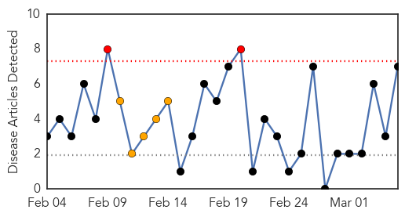
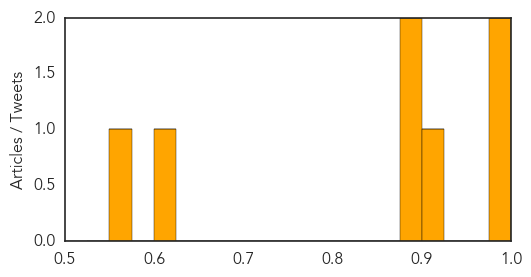
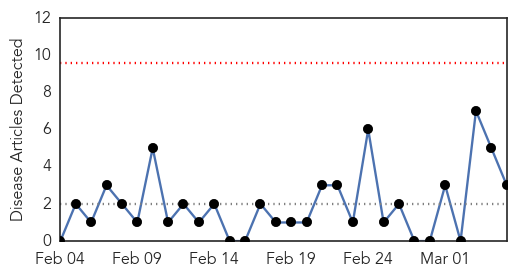
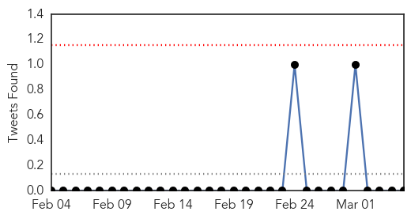
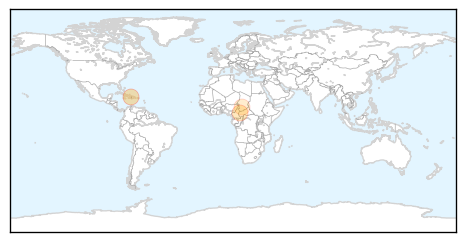

Dengue Fever
30-Day Web Trend
2 alerts, 5 warnings

30-Day Twitter Trend
1 alerts, 0 warnings
Article Locations
Article Confidences
Top Articles:
- 0.999
- Health declares alert for dengue
- 0.995
- Samoa reports dengue case, health alert issued
- 0.921
- Dengue control: ‘There shouldn’t be any excuses… you know your job’
- 0.898
- Surveillance done in 3,000 houses in highest risk area
- 0.890
- Community approach for health campaign - Fiji
- 0.619
- State to cover all expenses of HIV infected woman’s children: Health Minister
- 0.560
- Cuba Manipulating Health Care Statistics
Top Tweets:
-
No tweets found for Mar 05, 2014
Cholera
30-Day Web Trend
0 alerts, 0 warnings

30-Day Twitter Trend
0 alerts, 0 warnings

Article Locations
Article Confidences

Top Articles:
Top Tweets:
-
No tweets found for Mar 05, 2014